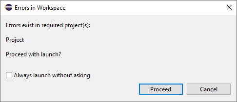

Debugging
Apabila program yang dibuat tidak berjalan dengan seharusnya, pembuat program dapat mencari tahu hal apa yang membuat hal tersebut terjadi dengan melakukan debugging. Dengan kata lain, debug adalah suatu proses untuk menganalisa dan memperbaiki kesalahan yang ada di dalam program, sehingga program dapat berjalan tanpa bug.
Terdapat beberapa jenis error yang dapat terjadi ketika membuat program.
Syntax Error
Setelah di Run program pada java jika terdapat error maka akan muncul sebuah pop up seperti gambar dibawah ini:
